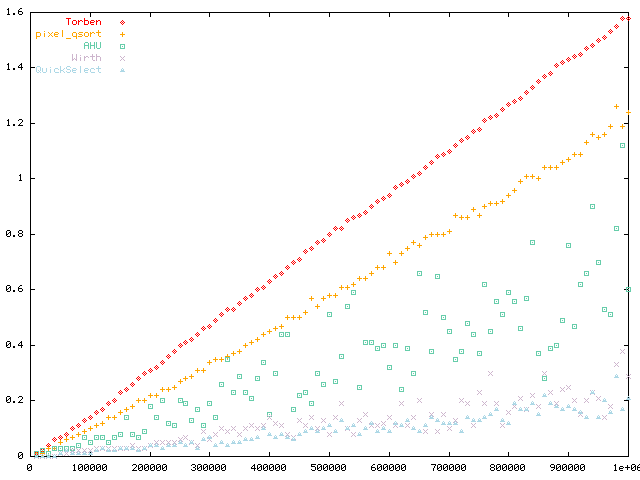

Nicolas Devillard - ndevilla AT free DOT fr
July 1998
C library update and Python filter code by
Stephen L Arnold - stephen.arnold AT acm DOT org
summer-ish 2005
Let us define the median of N numerical values by:
Example:
input values: 19 10 84 11 23
median: 19
The first definition is easy to grasp but is given through an algorithm (sort the array, take the central value), which is not the best way to define such a concept. The latter definition is more interesting since it leaves out the choice of the algorithm. Intuitively, one can feel that sorting out the whole array to find the median is doing too much work, since we just need the middle value and not the whole array sorted. However, most of the job must be done in order to assess that the median value is effectively the one in the middle.
Applications of a median search are many. In digital signal processing, it may be used to remove outliers in a smooth distribution of values. A median filter is commonly referred to as a non-linear shot noise filter which maintains high frequencies. It can also be used to estimate the average of a list of numerical values, independently from strong outliers.
In image processing, a median filter is computed though a convolution with a (2N+1,2N+1) kernel. For each pixel in the input frame, the pixel at the same position in the output frame is replaced by the median of the pixel values in the kernel. Image processing morphological filters are well described in any reference about image processing, such as [Russ].
Every ANSI compliant C library comes with an implementation of a quicksort routine. This standard routine is however usually very slow compared to the most recent methods, and overkill in the case of median search.
The main interest of this function is to give a reference of what the slowest way to achieve median search can be. On the other hand, it is extremely simple to write, portable, and easy to read.
This method makes use of a faster routine for array sorting, taken from literature and slightly optimized in ANSI C. It gives much better results than the Solaris qsort() for example.
This routine is reasonably portable, should not be a problem for any ANSI compliant C compiler, can be encapsulated like the standard qsort() and used straightaway for many other purposes.
This algorithm has been taken from [Aho et al]. In pseudo-code, it can be described as:
S is a list of numerical values
k is the rank of the kth smallest element in S.
procedure select(k,S)
if |S|=1 then return single element in S
else
choose an element a randomly from S;
let S1, S2, S3 be the sequences of
elements in S respectively less than,
equal to, and greater than a;
if (|S1| >= k) then
return select(k,S1);
else
if (|S1|+|S2| >= k) then
return a;
else
return select(k-|S1|-|S2|, S3);
procedure find_median(S)
return select(|S|/2, S)
This algorithm makes use of the fact that only the kth smallest element is searched for in S, thus does not need to sort the complete array. It is much faster than a complete array search, and potentially useful for other applications interested in getting other ranked values than the median.
This algorithm is recursive, and it needs to allocate a copy of a part of the input array at each iteration. For big input arrays, this puts serious memory requirements and virtually no possible limit on the quantity of potentiatlly used memory. In the worst case, the amount of memory needed to work could reach N*(N-1)/2 which would most likely bring memory allocation failures or program crashes. Even if the probability of hitting such cases is low, it is not recommended to use this algorithm on big arrays or in any program for which strong reliability is a keyword.
This is an interesting method for educational purposes, but unrealistic to use in any other environment, because of the recursivity constraints. Furthermore, the other methods described here have both the advantage of being faster and non-recursive.
NB: "Choose an element randomly in S" has been modified in the proposed implementation to "take the central element in S" to avoid a call to the random generator and a modulo division at each iteration. This brings in the fact that some arrays will be very bad cases for this method, needing a lot of iterations. Random picking would have ensured to stay (almost) always within reasonable bounds but constrains to 2 expensive calls at each iteration.
This algorithm has been taken from [Wirth].
The pseudo-code for this algorithm is given in the book, and in wirth.c (see code section below) a literal translation is done from Pascal to ANSI C. It does not try to sort out the complete array but browses through the input array just enough to determine what is the kth smallest element in the input list. It is not recursive and does not need to allocate any memory, nor does it use any external function. As a result, it gains a factor 25 in speed compared to the qsort() based method.
Apparently, it is the same algorithm as the AHU median, but implemented in situ. The advantage is obviously that it gets rid of recursivity, the price to pay is an initial copy of the input array because it is modified during the process.
The median search is defined as a macro on top of the function which finds the kth smallest element. It defines the median for an odd number of points as the one in the middle, and for an even number the one just below the middle. See the discussion below about finding the median of an even number of elements.
This algorithm was published in [Numerical Recipes].
Speedwise, it is a close tie with Wirth's method. On the average, this one is faster, however. It works in situ and modifies the input array, so the same caveats apply: the input data set must be copied prior to applying the median search.
This method was pointed it out to me by Torben Mogensen.
It is certainly not the fastest way of finding a median, but it has the very interesting property that it does not modify the input array when looking for the median. It becomes extremely powerful when the number of elements to consider starts to be large, and copying the input array may cause enormous overheads. For read-only input sets of several hundred megabytes in size, it is the solution of choice, also because it accesses elements sequentially and not randomly. Beware that it needs to read the array several times though: a first pass is only looking for min and max values, further passes go through the array and come out with the median in little more time that the pixel_qsort() method. The number of iterations is probably O(log(n)), although I have no demonstration of that fact.
The methods described above are very useful to search for the median value of many elements, but for small number of values there are even faster methods which can be hardwired to produce the median in the fastest possible time. In image processing, a morphological median filter on a 3x3 kernel needs to find the median of 9 values for each set of 9 neighbor pixels in the input image. Code is provided here to get the median out of 3, 5, 7, 9 and 25 values in the fastest possible time (without going to hardware specifics). Other sorting networks can be found for different numbers of values, they are not provided here.
An article about fast median search over 3x3 elements can be found at [Smith].
http://www.xilinx.com/xcell/xl23/xl23_16.pdf
Image median filters using large kernels may use the redundancy in the fact that the method is looking for the median of NxN pixels, then going to the next kernel position (usually: next pixel on the right) means taking out N pixels and adding N new ones. For a 3x3 kernel, it is unefficient to use this redundancy since only 3 pixels stay unchanged, but for large kernels e.g. 40x40, there are only 40 pixels less and 40 pixels more at each iteration, but 1560 values which stay unchanged. In that case, it may be more efficient to go to histogram or tree-based methods. No implementation for these methods is provided here, only the general ideas.
Building up a histogram, one can notice that the median information is indeed present in the fact that pixels are sorted out into buckets of increasing pixel values. Removing pixels from buckets and adding more is a trivial operation, which explains why it is probably easier to keep a running histogram and update it than to go from scratch for every move of the running kernel.
Interested readers are referred to [Huang et al].
The same idea can be used to build up a tree containing pixel values and number of occurrences, or intervals and number of pixels. One can see the immediate benefit of retaining this information at each step.
There is now an example Python implementation of an adaptive median image filter. The arguments allow for both a variable window size and an adaptive threshold parameter. Aside from argument and error handling, the Python code uses both numpy and pillow (formerly Python Imaging Library) to manipulate image files and pixel arrays/vectors. At the heart it can use either a numpy sort routine or a call to one of the C library functions to return the median of a 1D pixel array (and optionally apply the threshold parameter).
See the adaptive-median repo on github for source code and a sample image. Note the old swig wrapper is still old and broken :(
The following plots have been produced for all generic methods (QuickSelect, Wirth, Aho/Hopcroft/Ullman, Torben, pixel quicksort) on a Pentium II 400 MHz running Linux 2.0 with glibc-2.0.7. It is interesting to note that all methods are roughly proportional on this machine, with the following estimated ratios to the fastest method (QuickSelect).
The basic method using the libc qsort() function has not been represented here, because it is so slow compared to the others that it would make the plot unreadable. Furthermore, it depends on the local implementation of your C library.
The following ratios have been obtained for sets with increasing number of values, from 1e4 to 1e6. The speed ratios have been computed to the fastest method on average (QuickSelect), then averaged over all measure points.
QuickSelect : 1.00 WIRTH median : 1.33 AHU median : 3.71 Torben : 8.95 fast pixel sort : 6.50

On the x-axis, the number of elements from which a median is extracted, in thousands (goes from one thousand to one million elements). On the y-axis, the time used in seconds.The complete result set can be downloaded here in ASCII format for comparison. Some points on the curve:
| Elements | QSelect | Wirth | AHU | Torben | pixel_qsort |
| 100,000 | 0.010 | 0.020 | 0.050 | 0.140 | 0.100 |
| 200,000 | 0.040 | 0.040 | 0.180 | 0.310 | 0.220 |
| 500,000 | 0.110 | 0.080 | 0.510 | 0.800 | 0.580 |
| 800,000 | 0.120 | 0.160 | 0.590 | 1.270 | 0.940 |
| 1,000,000 | 0.210 | 0.290 | 0.600 | 1.580 | 1.240 |
To reject outliers. When you have a signal distribution that is smooth enough but contains crazy outliers, you might get into trouble with fitting routines or statistical tools. That is the case for astronomical detectors hit by a cosmic ray for example, but there are many cases where you want to get an estimate of the average signal value without bothering about outlier rejection. A median can often be a fast and useful answer.
If you have little numbers of elements, e.g. for image processing filter kernels, use the provided macros to find out a median out of 3, 5, 7, or 9 elements. There is no faster way. If you are applying a kernel with a large number of elements, see the section above about large kernels.
If you have a reasonable number of elements and are allowed to modify your input element list, use QuickSelect or Wirth. The choice between both should be done depending on your typical input data sets. Try out both and pick one. If you are not allowed to modify your inputs but the data set is sufficiently small to hold in memory, I would go for QuickSelect or Wirth again. Copy your input data set to memory, apply the median-finder, and destroy the temporary data set.
If you are not allowed to modify your input data set and it is large enough that copying it causes serious overheads, try out Torben's method. It does not modify the input set thus avoiding the overheads of a copy, but beware that it needs to run several times through the set. Fortunately, browsing the set is done sequentially, that gives more chances of being able to read the set through bufferized inputs.
Hopefully yes! There is no library call of any kind, it should work rightaway on any place that compiles C. The given code finds out the median out of a set of elements, up to you to specify the kind of elements you want to search. You could also apply templates in C++ to use the same code for any numeric type.
There are several possible answers to this question. According to the NIST web site (National Institute of Standards and Technology):
Median definition: The value which has an equal number of values greater and less than it. For an even number of values, it is the mean of the two middle values.
The mean is, in this case, understood as the arithmetic mean of both values (i.e. half of their sum).
In Introduction to algorithms [7], the authors define two medians: the lower median and the upper median, and state that for an odd number of elements both medians are identical. In the rest of the paragraph dedicated to medians, only the lower median is considered.
Example:
input values: 19 10 94 11 23 17
median: 17 if element n/2
19 if element n/2 +1
If you do not require the median value to be one of the elements of the initial list, you can decide that the median is the average of the two central elements. In the above example, the median would be the average of 17 and 19, i.e. 18. You can of course use whatever average you prefer, arithmetic or geometric, since at this point it is up to you to check what suits your application.
Taking the median out of a list of elements also does not mean that the elements have to be numbers, they can be anything you want provided they obey a sorting rule (i.e. it is always possible to tell if one element is greater than, smaller than or equal to another element). For some elements, taking the average does not make sense.
The default behaviour in the routines provided on this page is to take the element just below the middle (lower median). Taking an average of the two central elements requires two calls to the routine, doubling the processing time.
Notice that if you are taking the median out of a great number of elements, and these elements tend to behave all more or less the same except some outsiders, the median is likely to be exactly the same whatever definition you use.
Many thanks to Torben Mogensen for his non-destructive median method allowing to work on very large data sets, and for a number of fruitful discussions. My gratitude goes to Martin Leese for pointing out the histogram-based method and of course introducing me to the Quickselect method, for which he provided a C++ implementation (the C version given in here is merely an optimized translation of his code). Thanks to all contributors from the Usenet, too many to quote here. (also thanks to Nicolas for the inspiration and for releasing the original code and documenting his benchmarks - SLA, 2015)